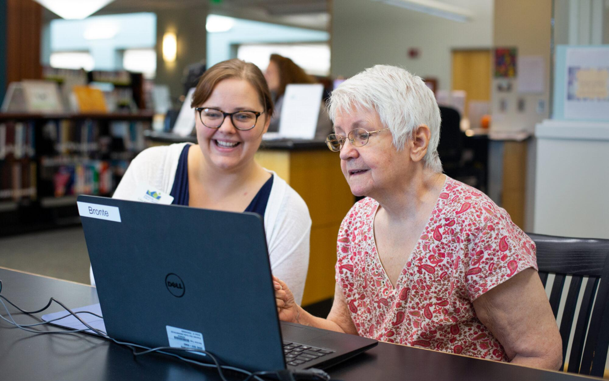

✦
Learn AI Basics
Understand artificial intelligence in clear, everyday language with practical examples.
Learn More →
Making technology and artificial intelligence easier, safer, and more approachable for older adults.
A proposed nonprofit initiative focused on adults aged 60 and older.

Technology should connect us, not leave anyone behind.
Understand artificial intelligence in clear, everyday language with practical examples.
Learn More →Learn to recognize scams, protect personal information, and verify online content.
Learn More →Explore community workshops and patient, supportive instruction for older adults.
Learn More →Many older adults face challenges adapting to rapidly changing technology. Confusing instructions, privacy concerns, and limited access to in-person support can create barriers.
Digital Bridges aims to close this gap through accessible education, practical learning, and community-based support.
Discover Our Mission →Our approach combines community education, virtual learning, and multilingual support.
Twice-monthly educational sessions planned at libraries and community centers.
Monthly online classes designed for individuals unable to attend in person.
Monthly learning opportunities in additional languages to expand accessibility.
Explore beginner-friendly technology resources.
Explore Resources →